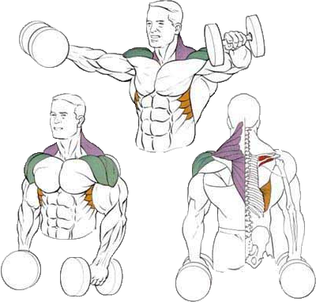

Данное упражнение в большей степени нагружают боковые пучки дельтовидных мышц.
Исходное положение:
Встать прямо и слегка наклониться вперед.
Взять гантели и опустить руки вниз.
Техника выполнения:
Сделать глубокий вдох. Развести руки с гантелями в стороны на уровень плеч.
В конечном положении задняя часть снаряда должна быть слегка приподнята.
На выдохе плавно опустить руки обратно.
Рекомендации:
Необходимо постараться исключить читинг. Задумываясь о том, как правильно качать плечи, направляйте нагрузку только на них. Читинг включает в работу уже другие мышцы и результаты заметно снижаются.